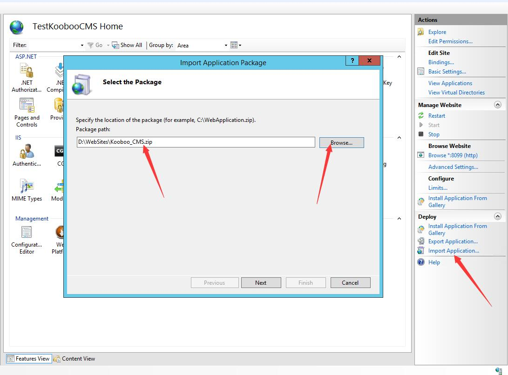
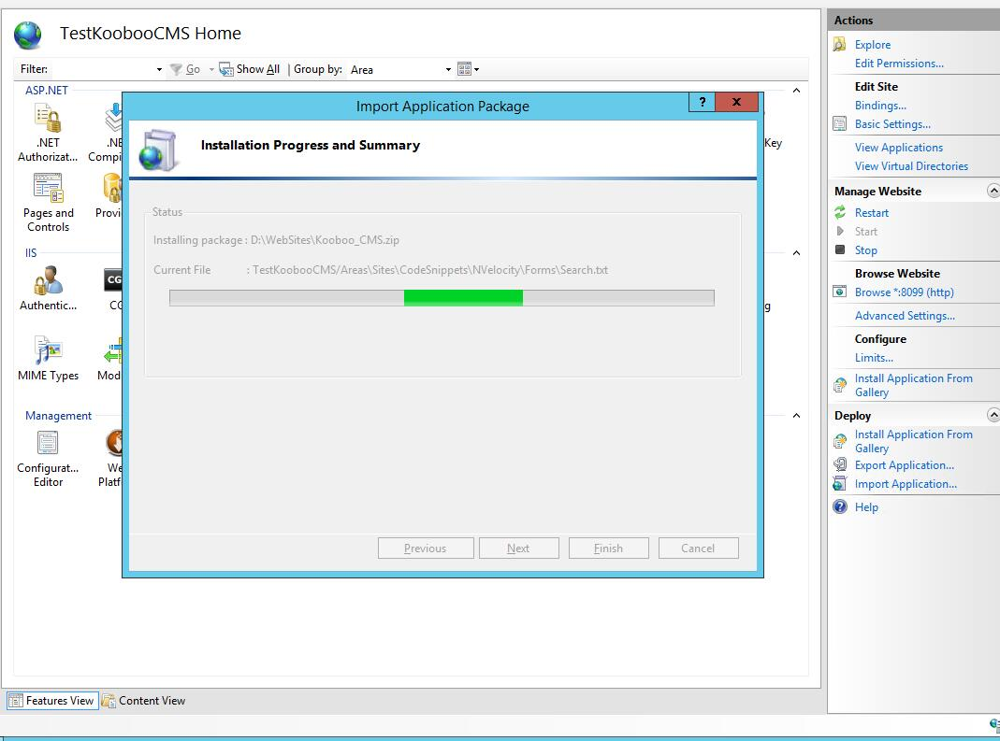
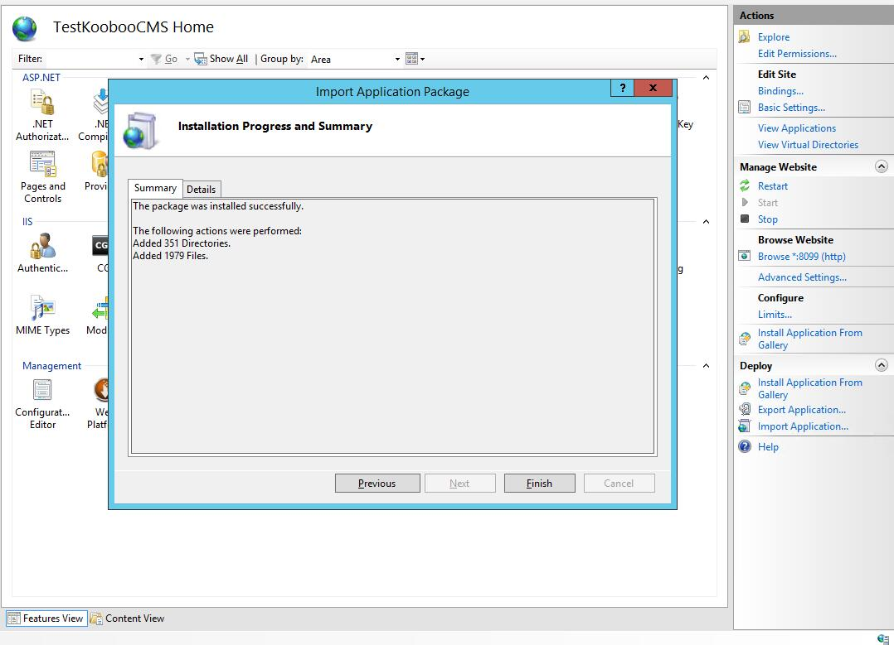
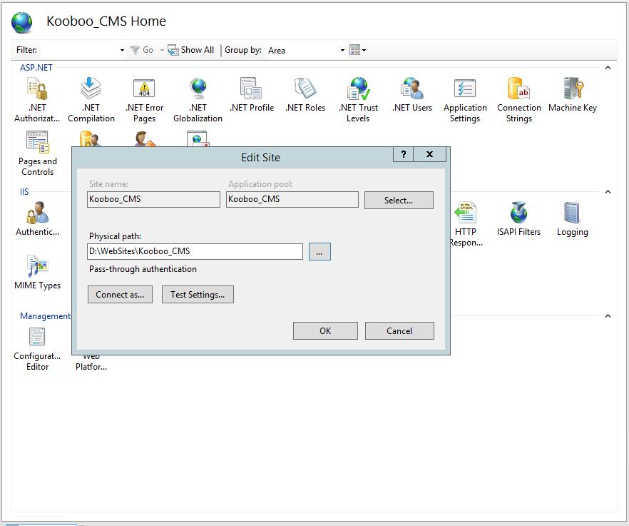
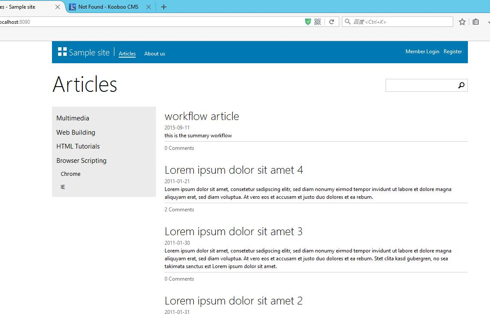
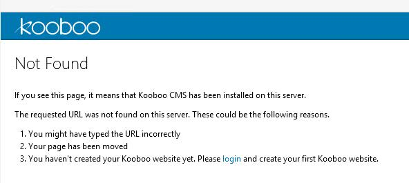

1. 在IIS上安装Kooboo CMS
Kooboo CMS部署到正式环境相当简单，安装过程是一个普通MVC站点在IIS上的架设过程，没有额外的配置步骤。首先从下载中心下载最新版本的Kooboo CMS安装包以备用。在IIS上安装Kooboo CMS，主要有以下两种方式：
1) 使用导入方式部署
1.首先在IIS上创建个站点，指向一个空的文件夹。然后点击IIS面板右下方的“Import Application…”，在弹出的窗口中选择上文下载的Kooboo_CMS.zip压缩包(注意：无需解压)。

2.一路点击Next（下一步）直至完成即可。


2) 手动部署
1.将上文下载的Kooboo_CMS.zip解压后，在IIS上创建个站点指向解压后的目录。

2.设置I18N与Cms_Data两个文件夹的权限（右击文件夹进入属性设置中设置），确保IIS对其有写入权限。
2. Kooboo CMS安装之后
直接打开你部署完的地址，你可能会看到以下界面：

那么恭喜你，部署成功了！当然你也可能看到的是这个样子的：

此时我该说的是：“恭喜你，部署成功了！”。
真没逗你，部署成功了。有兴趣可以看一看那上面说了什么。当然你也可以直接点击那个“login”链接进入下一步。
不管以上哪种样子，你都可以输入 /admin 进入后台，初始密码是：
|
3. 安装的常见问题
站点运行时出现配置错误，提示：“Parser Error Message: Could not load file or assembly ‘Kooboo.CMS.Web’ or one of its dependencies. This assembly is built by a runtime newer than the currently loaded runtime and cannot be loaded.” 这种情况，通常是在IIS中使用了错误了.NET Framework版本。请检查是否正确设置使用.NET 4。
在站点运行过程中，如果出现文件无法删除或抛出类似IOException的异常，请检查当前IIS用户是否有对Cms_Data目录的读写。如果不确定，请在Cms_Data目录上设置“Everyone”具有“读写权限”。